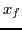
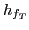
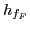
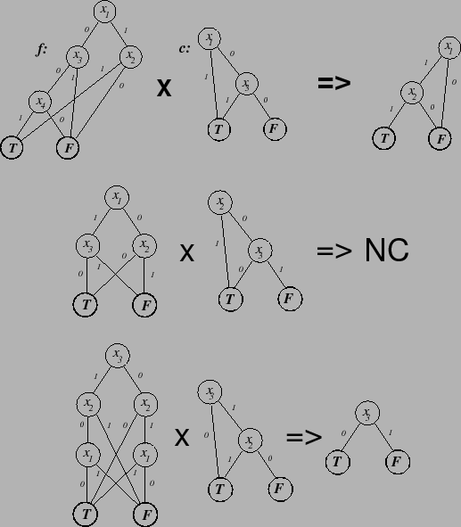
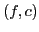
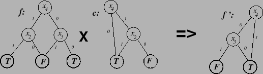

Branch pruning is an operation on two BDDs. The intention is
to remove paths from one BDD which are made irrelevant by the
other BDD. The following specifies how this is done in pseudo-C++ style:
BDD Prune (BDD f, BDD c) {
if (c == T || f == F ||
f == T) return f;
if (c ==  f) return F;
f) return F;
if (c == f) return T;
// f and c have a non-trivial relationship
let  = root(f); // is a variable
let  = root(c); //
= root(c); //  is a variable
is a variable
if (index() > index( ) return
Prune(f, ExQuant(c,
) return
Prune(f, ExQuant(c,  ));
));
if (Reduce (, c) == F) return
Prune(Reduce
(, c) == F) return
Prune(Reduce (, f), Reduce
(, f), Reduce (, c));
(, c));
if (Reduce (, c) == F) return
Prune(Reduce
(, c) == F) return
Prune(Reduce (, f), Reduce
(, f), Reduce (, c));
(, c));
let  = Prune(Reduce (, f),
Reduce
(, f),
Reduce (, c)); // is a BDD
(, c)); // is a BDD
let  = Prune(Reduce (, f),
Reduce
(, f),
Reduce (, c)); // is a BDD
(, c)); // is a BDD
if ( == ) return ;
return find_or_add_node(, , );
}
The procedure Prune takes two BDDs which are top-level functions
as input and returns a BDD which can replace the BDD of argument f at the top-level. Figure 23 shows an example.
|  |
Branch pruning can reveal inferences but this depends on the variable
ordering. Figure 24 shows Prune applied to two
BDDs with no result. BDDs representing the same two functions but
under a different variable ordering are pruned in
Figure 25 revealing the inference  .
.
Branch pruning is similar to a procedure called generalized cofactor
or constrain (see Section 10.3 for a description). Both
Prune and gcf agree with  on interpretations
where
on interpretations
where  is satisfied, but are generally somehow simpler than
is satisfied, but are generally somehow simpler than  .
Both are highly dependent upon variable ordering, so both might be
considered ``non-logical.'' Branch pruning is implemented in SBSAT because the
BDDs produced from it tend to be smaller. In any case, unlike for
gcf, BDDs can never gain in size using branch pruning.
.
Both are highly dependent upon variable ordering, so both might be
considered ``non-logical.'' Branch pruning is implemented in SBSAT because the
BDDs produced from it tend to be smaller. In any case, unlike for
gcf, BDDs can never gain in size using branch pruning.
There appear to be two gains to using branch pruning. First, it can make SMURFs smaller (see Section 11.1 for information about SMURFs). Second, it often appears, by avoiding duplicated information, to make the LSGB search heuristic's evidence combination rule work better.
On the negative side, it can, in odd cases, lose local information. Although it may reveal some of the inferences that strengthening would (see below), branch pruning can still cause the number of choicepoints to increase. Both these issues are related: branch pruning can spread an inference that is evident in one BDD over multiple BDDs (see Figure 26 for an example).
|  |